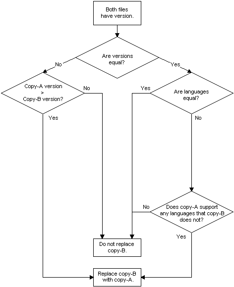

| Microsoft Windows Installer |
If the key file of a component being installed (copy-A) has the same name as a file already installed in the target location (copy-B), the installer compares the version number, date, and language of the two files.
If both files have a version number, the installer uses the logic illustrated by the following flow diagram to determine whether to replace all of the installed files belonging to the component. Because the installer only installs entire components, if the installed key file is replaced then all the component's files are replaced.
Note that this diagram illustrates the default File Versioning Rules, which can be overridden by setting the REINSTALLMODE property. The default value of the REINSTALLMODE property is "omus".

The previous diagram can also be used with files with no language specified. If copy-A has a specified language and copy-B has no specified language, copy-B is replaced with copy-A. If copy-A and copy-B both have no language specified, then copy-B is not replaced.
See examples of default file versioning in Replacing Existing Files.